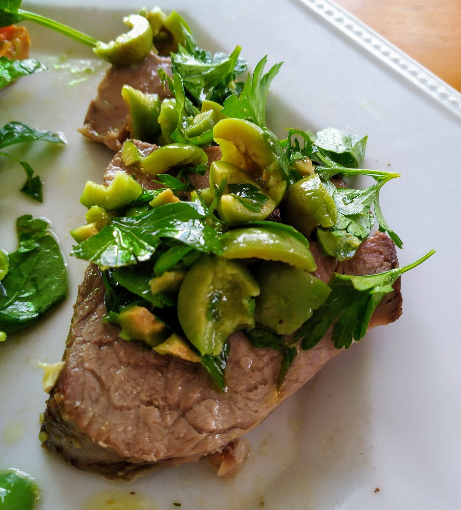

Roast Lamb with Olive Tapenade

Preheat oven to 180 degrees
2kglamb leg
Place lamb leg in baking dish, pour 1 cup of water over base of dish
1/3 cupmaple syrup1 1/2 tbsbalsamic vinegar glaze
Combine maple syrup and balsamic vinegar glaze in bowl.
Baste lamb with one-third of maple glaze.
Bake for 15 mins or until lamb starts to brown
Reduce oven to 160 degrees, bake lamb, basting every 15 mins for 1-2 hours
1 bunchparsley230g jarpitted sicilian olives
Finely chop parsley and pitted sicilian olives
1 smalllemon juice1/2 cupolive oil
Combine parsley, olives, lemon juice and olive oil. Season with pepper.
Top lamb with olive tapenade.